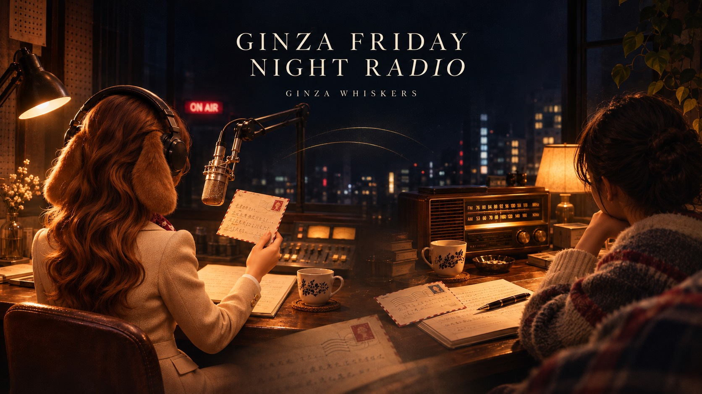

GINZA FRIDAY NIGHT RADIO
昭和の深夜ラジオを、読む。
一週間を終えた金曜の夜。少しだけ夜更かしをして、銀座の話に耳を傾けるように、言葉をたどる時間を。
GINZA FRIDAY NIGHT RADIOは、銀座の小話と懐かしい音楽を楽しむ「読む深夜ラジオ」です。銀座育ちのパーソナリティ、ポピーが、街の今と昔、週末の話題、思い出の一曲をお届けします。
勉強や仕事の合間に、眠る前のひとときに。ひとりで過ごす夜にも、ラジオの向こうには、語りかけてくれる誰かがいる。昭和の深夜ラジオにあったその親密さを、ポピーの言葉と、読者から届くコメントで紡ぎます。
毎週金曜日23時。眠る前のひとときに、銀座からのおしゃべりをどうぞ。

金曜の夜、おしゃべりの続きを。
銀座の話から、あなたの思い出の一曲まで。これまでの回を、noteマガジンでお楽しみください。思い浮かんだことは、記事のコメント欄へ。あなたの言葉も、お待ちしています。